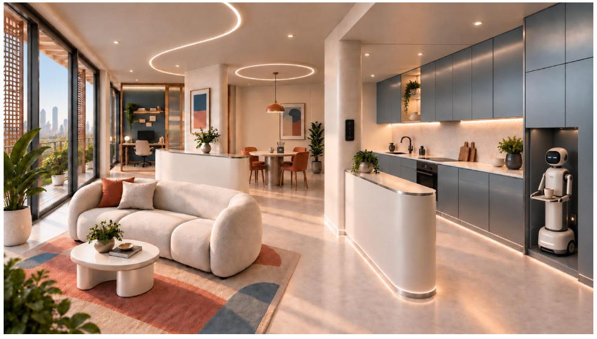

01 / ALBUM COVER DESIGN
Training Season
An album cover exploring self-belief and the anticipation of love.
AI for Interdisciplinary Design
Content Producer & Visual Designer.
Available for work
Selected work · 2026
Visual stories and immersive worlds brought to life through imagination and play.
An album cover exploring self-belief and the anticipation of love.

A future home imagined through warm materials and technology woven into everyday life.
A reflection reveals another way forward in a five-chapter puzzle journey.
LET’S CONNECT
From the first spark to the final frame, I’d love to help bring it to life. Have a project, an idea, or an opportunity to share?
Let’s make somethinganweshad@asu.edu
Available for work and collaborations